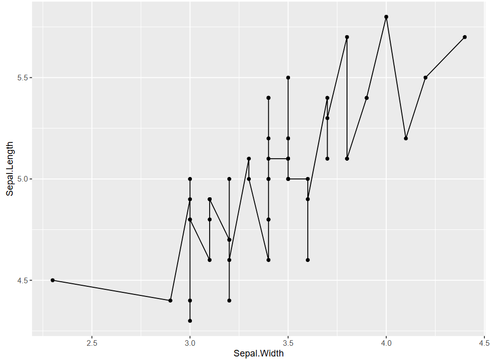
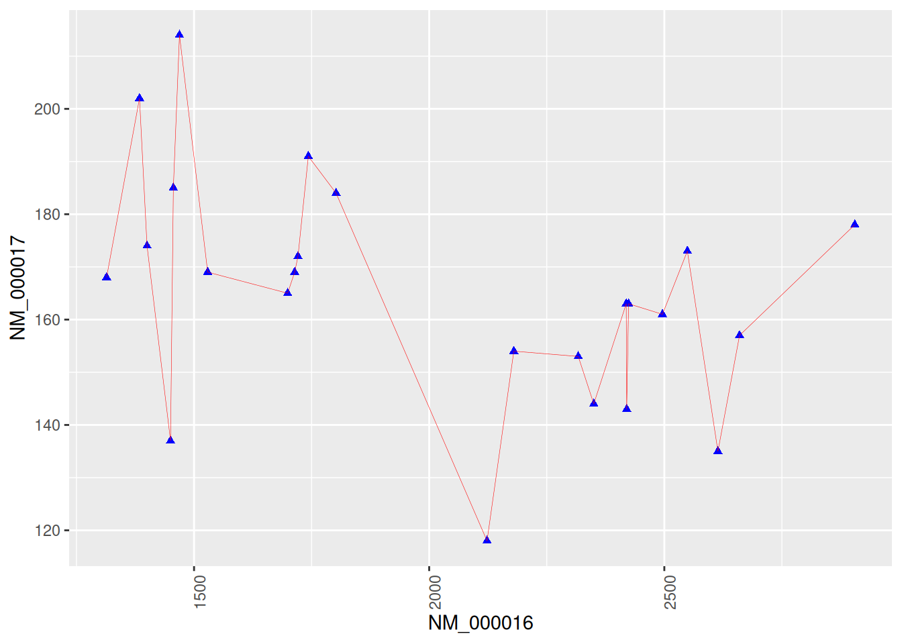
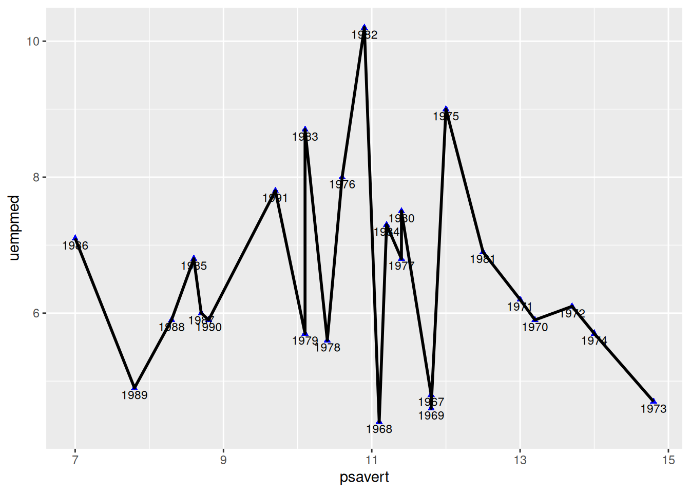
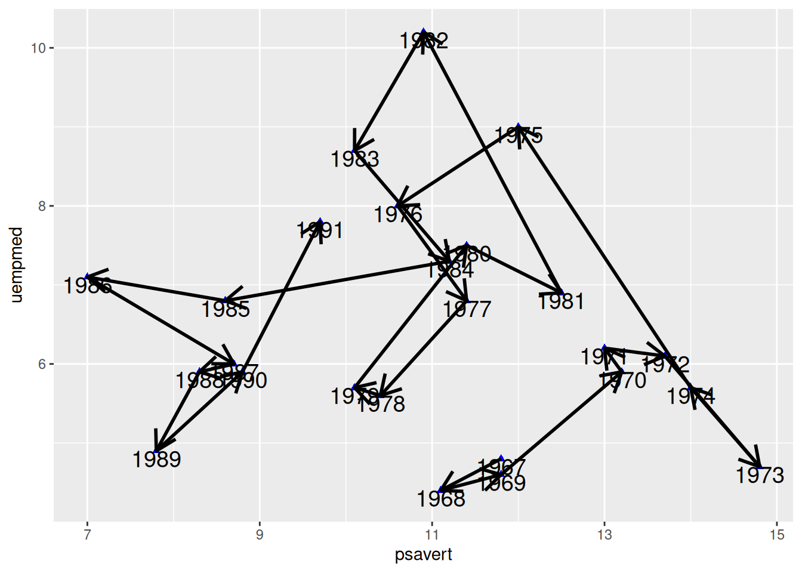
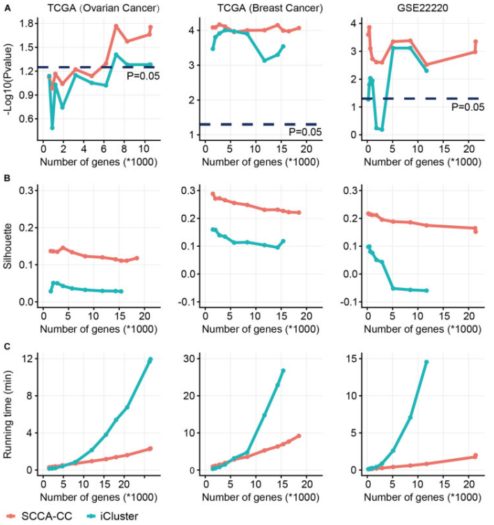
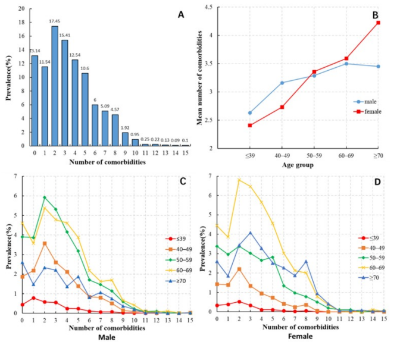

# Install packages
if (!requireNamespace("ggplot2", quietly = TRUE)) {
install.packages("ggplot2")
}
if (!requireNamespace("dplyr", quietly = TRUE)) {
install.packages("dplyr")
}
# Load packages
library(ggplot2)
library(dplyr)
library(stringr)Connected Scatter
Connected scatter is a type of chart that builds upon scatter by adding lines to connect the data points in a certain order. It allows us to discern not only the correlation between independent variable and dependent variable but also the trend in the data points.
Example

In this figure, this is a basic connected scatter plot. The curve representing the change between Sepal.Length and Sepal.Widthfluctuates up and down. However, overall, the dependent variable Sepal.Length increases as the independent variable Sepal.Width increases.
Setup
System Requirements: Cross-platform (Linux/MacOS/Windows)
Programming Language: R
Dependencies:
ggplot2,dplyr
Data Preparation
The datasets used are the built-in R datasets iris and economics. The iris dataset contains measurements of sepal length and width, as well as petal length and width, for three species of iris plants. The economics dataset is a time series of U.S. economic data. Additionally, the gene expression data for breast cancer from the NCBI database is used,which has 24 sample columns, and two rows of gene expression data are selected for plotting.
# 1.Load iris data
data("iris", package = "datasets")
data <- iris
# 2. Load and filter time series data
# To simplify the plotting process, only the data from December is selected to represent the entire year
data_economics <- economics %>%
select(date, psavert, uempmed) %>%
filter(str_detect(date, "-12-01")) %>%
slice_head(n = 25) %>%
mutate(date = str_extract(date, "^\\d{4}")) %>% #extracts the 4-digit year from the beginning of each date string.
select(date, psavert, uempmed)
# 3.Load gene expression data (first two rows)
data_counts <- read.csv("https://bizard-1301043367.cos.ap-guangzhou.myqcloud.com/GSE243555_all_genes_with_counts.txt", sep = "\t", header = TRUE, nrows = 10)
axis_names <- data_counts[c(1, 2), 1] # Save names
data_counts <- data_counts %>%
select(-1) %>% # Remove first column
slice(1:2) %>% # remain the first two rows
t() %>% # Transpose
as.data.frame() %>%
setNames(c("V1", "V2")) # Set column names
head(data_counts) V1 V2
MCF7.HG..1. 2905 178
MCF7.HG..LG..2. 2496 161
ADIPO.HG..2. 1802 184
ADIPO.HG..LG..2. 1400 174
MCF7...ADIPO..HG..2. 2180 154
MCF7...ADIPO..HG..LG..2. 2123 118Visualization
1. Basic Plotting
Figure 1 was created by adding geom_line to the scatter plot.
# Basic plotting, only adding `geom_line`
p <- ggplot(data[data$Species == "setosa", ], aes(x = Sepal.Width, y = Sepal.Length)) +
geom_point(shape = 17, size = 1.5, color = "blue") +
geom_line()
p
2. Set Line Styles
Figure 2 sets the line direction, width, type, and color by parameters.
## Set line styles
p <- ggplot(data[data$Species == "setosa", ], aes(x = Sepal.Width, y = Sepal.Length)) +
geom_point(shape = 17, size = 1.5, color = "blue") +
geom_line(orientation = "x", linetype = 1, color = "red", linewidth = 0.1)
p
Tip
Key Parameters: geom_line
linetype:
linetype indicates the type of line, with optional values ranging from 0 to 6 (0 = blank, 1 = solid, 2 = dashed, 3 = dotted, 4 = dotdash, 5 = longdash, 6 = twodash). The specific shapes are shown in the following figure:

orientation:
The orientation of the line segment, with options “x” and “y”. When orientation="x", the line is plotted with x as the independent variable and y as the dependent variable.
linewidth:
The thickness of the line segment.
3. Multiclass Data Plotting
Figure 3 was created by using color=Species, shape=Species, and linetype=Species to map the categorical variable to multiple features.
## Multiclass Data Plotting
## Use `color=Species`,`shape=Species`,`linetype=Species` to map categorical variables to multiple features
p <- ggplot(
data[data$Species == "setosa" | data$Species == "virginica", ],
aes(x = Sepal.Width, y = Sepal.Length)
) +
geom_point(aes(color = Species, shape = Species), size = 1.5) +
geom_line(aes(linetype = Species)) +
# Change the position of the legend
theme(legend.position = "inside", legend.position.inside = c(0.85, 0.8))
p
4. Plotting with Genetic Data
Figure 4 shows a connected scatter plot of two genes related to breast cancer.
# Plotting with genetic data
p <- ggplot(data_counts, aes(x = V1, y = V2)) +
geom_point(shape = 17, size = 1.5, color = "blue") +
geom_line(orientation = "x", linetype = 1, color = "red", linewidth = 0.1) +
theme(axis.text.x = element_text(angle = 90)) + # Avoid text overlap
labs(x = axis_names[1], y = axis_names[2]) # Add x-axis and y-axis labels
p

5. Connect Points In Chronological Order
Do not Connect Points in Chronological Order (For Comparison)
Figure 5 uses geom_line() for drawing. By default, geom_line() draws along the x-axis direction (it draws along the y-axis when orientation="y").
p <- ggplot(data_economics, aes(x = psavert, y = uempmed)) +
geom_point(shape = 17, size = 1.5, color = "blue") +
geom_text(
label = data_economics$date, nudge_x = 0,
nudge_y = -0.1, size = 3
) +
geom_line(linewidth = 1)
p

Connect Points in Chronological Order
In Figure 6, geom_segment() is used to connect points in chronological order, which results in a significant difference compared to the plot drawn with geom_line().
# Sort by date
data_economics <- data_economics[order(data_economics$date), ]
# Use `geom_segment()` to draw line segments
p <- ggplot(data_economics, aes(x = psavert, y = uempmed)) +
geom_point(shape = 17, size = 1.5, color = "blue") +
geom_text(
label = data_economics$date, nudge_x = 0,
nudge_y = -0.1, size = 5
) +
geom_segment(
aes(
xend = c(tail(psavert, n = 24), NA),
yend = c(tail(uempmed, n = 24), NA)
),
linewidth = 1
)
p
Tip
Key Parameters: geom_segment
xend,yend：
Corresponding to x and y, that is, drawing a line segment from (x, y) to (xend, yend). In the code, c(tail(psavert, n=24), NA) takes the last 24 values of the psavert column and appends an NA. This makes each point point to the next one to draw a line segment, with the final point pointing to NA, thus not drawing a line segment.
Draw Arrows
Arrows are added to each line segment in Figure 7, making the chronological features in the connected scatter plot more apparent.
# Sort by date
data_economics <- data_economics[order(data_economics$date), ]
# Use `geom_segment()` to draw line segments
p <- ggplot(data_economics, aes(x = psavert, y = uempmed)) +
geom_point(shape = 17, size = 1.5, color = "blue") +
geom_text(
label = data_economics$date, nudge_x = 0,
nudge_y = -0.1, size = 5
) +
geom_segment(
aes(
xend = c(tail(psavert, n = 24), NA),
yend = c(tail(uempmed, n = 24), NA)
),
linewidth = 1, arrow = arrow(length = unit(0.5, "cm"))
)
p

Applications

The plot shows the relative error curves corresponding to the model methods based on the unused, original, and improved methods. The average relative error of the component content model based on the improved method is superior to the models based on the unused and original methods.[1]

Comparison of sparse canonical correlation analysis with iCluster for cancer classification(SCCA-CC). Using a different number of genes preselected based on MAD, we compared the classification performance between SCCA-CC and iCluster. (A) represents the P-value associated with survival, calculated by the log-rank test; (B) represents the Silhouette score indicating clustering consistency; (C) assesses the algorithm’s runtime to evaluate computational complexity.[2]

- Distribution of the number of comorbidities among HCC patients. (B) Average number of comorbidities among HCC patients of different ages and genders. (C) Distribution of the number of comorbidities among male HCC patients in different age groups. (D) Distribution of the number of comorbidities among female HCC patients in different age groups.[3]
Reference
[1] LU R, LIU H, YANG H, et al. Multi-Delay Identification of Rare Earth Extraction Process Based on Improved Time-Correlation Analysis[J]. Sensors (Basel), 2023,23(3).
[2] QI L, WANG W, WU T, et al. Multi-Omics Data Fusion for Cancer Molecular Subtyping Using Sparse Canonical Correlation Analysis[J]. Front Genet, 2021,12: 607817.
[3] MU X M, WANG W, JIANG Y Y, et al. Patterns of Comorbidity in Hepatocellular Carcinoma: A Network Perspective[J]. Int J Environ Res Public Health, 2020,17(9).